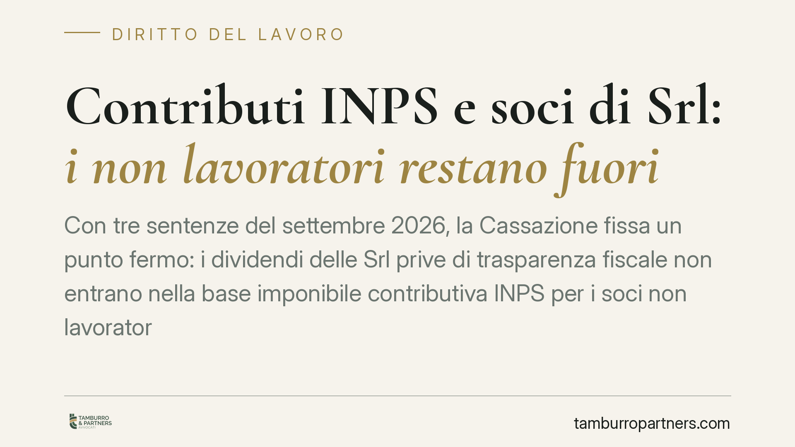

Contributi INPS e soci di Srl: i non lavoratori restano fuori
Con tre sentenze del settembre 2026, la Cassazione fissa un punto fermo: i dividendi delle Srl prive di trasparenza fiscale non entrano nella base imponibile contributiva INPS per i soci non lavoratori. Esclusi anche gli utili accantonati a riserva per i soci lavoratori. Una lettura che ridimensiona le pretese dell'Istituto e riporta ordine su un contenzioso diffuso tra artigiani e commercianti.

Il caso
La Corte di Cassazione, con le sentenze nn. 25628-25630 del 2026, è tornata su un tema che da anni alimenta accertamenti e ricorsi: quali redditi prodotti attraverso una società a responsabilità limitata concorrono a formare la base su cui si calcolano i contributi previdenziali dovuti da chi è iscritto alle gestioni INPS di artigiani e commercianti.
La risposta dei giudici è netta. I dividendi distribuiti da una Srl che non ha optato per la trasparenza fiscale restano fuori dalla base imponibile contributiva quando percepiti da soci che non svolgono attività lavorativa nella società. Non solo: anche per i soci lavoratori, gli utili accantonati a riserva — cioè non distribuiti — non concorrono al calcolo dei contributi.
Inquadramento normativo
Il perno della questione è l'art. 3-bis del D.L. 384/1992, convertito in legge, che àncora la base contributiva delle gestioni artigiani e commercianti alla "totalità dei redditi d'impresa" dichiarati ai fini IRPEF.
Qui sta il nodo. Nella Srl ordinaria vige il principio di autonomia patrimoniale: la società è un soggetto distinto dai soci e produce reddito d'impresa in capo a sé. Il socio, al contrario, percepisce un dividendo, che ai fini del TUIR è reddito di capitale, non reddito d'impresa. Manca quindi il presupposto testuale richiesto dalla norma.
Diverso il caso della trasparenza fiscale (artt. 115 e 116 TUIR): con l'opzione, il reddito della Srl è imputato direttamente ai soci per quota, a prescindere dall'effettiva distribuzione. In quello scenario il reddito conserva natura d'impresa in capo al socio e la Cassazione — coerentemente — ne ammette la rilevanza contributiva. Ma è un'ipotesi che presuppone una scelta espressa.
Sul punto degli utili a riserva, il ragionamento è ancora più lineare: ciò che non è distribuito non è nemmeno percepito, e non può quindi entrare in una base imponibile che presuppone un reddito effettivamente conseguito.
Implicazioni pratiche
Per il socio di una Srl ordinaria che non lavora nella società, la conseguenza è diretta: i dividendi incassati non generano obbligo contributivo verso le gestioni artigiani e commercianti. Le pretese dell'INPS fondate sull'assimilazione automatica dividendo-reddito d'impresa perdono base giuridica.
Per il socio lavoratore, la contribuzione resta dovuta sul reddito d'impresa a lui riferibile, ma non sugli utili lasciati a riserva. È una distinzione che incide in modo concreto sulle strategie di distribuzione: trattenere utili in società non fa scattare, di per sé, prelievo contributivo aggiuntivo.
Attenzione, però, a non trasformare la sentenza in una regola universale. Il perimetro dell'esclusione dipende da due variabili precise: l'assenza dell'opzione per la trasparenza e l'effettivo ruolo del socio nella società. Chi lavora nell'impresa e ne trae reddito d'impresa resta pienamente soggetto agli obblighi contributivi ordinari.
Resta inoltre da monitorare la posizione operativa dell'INPS e gli eventuali indirizzi del Ministero del Lavoro: l'orientamento giurisprudenziale è consolidato, ma la prassi amministrativa può richiedere tempo per allinearsi.
Cosa fare in concreto
- Verificate il regime fiscale della Srl: accertate se è stata esercitata l'opzione per la trasparenza (artt. 115-116 TUIR). È il primo elemento che determina la rilevanza contributiva.
- Qualificate la posizione di ciascun socio: distinguete con precisione tra socio lavoratore e socio di mero capitale, documentando l'effettivo apporto operativo.
- Riesaminate gli avvisi di addebito ricevuti: se fondati sull'assimilazione automatica dei dividendi, valutate opposizione o istanza in autotutela nei termini di legge.
- Distinguete utili distribuiti e accantonati: verificate che la contribuzione, ove dovuta, non abbia incluso riserve non distribuite.
- Consigliamo di conservare la documentazione societaria — verbali di distribuzione, bilanci, dichiarazioni — a supporto della posizione contributiva assunta.
La pronuncia offre argomenti solidi, ma ogni situazione va valutata sui fatti concreti e sui termini processuali applicabili.
---
Contributo informativo a cura di Tamburro & Partners - Avv. Giuseppe Tamburro. Non costituisce parere legale.
Ogni storia di lavoro ha i suoi tempi.
Se gestisci HR e vuoi un confronto su contenzioso, ispezioni o licenziamenti, scrivi allo studio. Ti rispondiamo entro un giorno lavorativo.